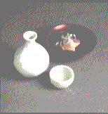
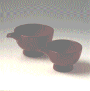

はじめに
昔ながらの生活道具と、意識して関わり始めて二十年ほどになる。伝統的工芸品産業振興協会の機関誌『伝統とくらし』に、使い手の立場で取材・執筆するという仕事がきっかけであった。
それまで私は、漆の汁椀や磁器の飯碗で食事をし、陶器の湯呑み茶碗でお茶を飲み、竹かごやガラスの花器に花を飾り、木のつるで編んだ小物入れを使うなど、日々の暮らしの中で、好きなモノ、心地よいモノを探しては愛用していた。しかし、モノの後ろに作った方がおられることを、あまり考えたことがなかった。ましてや、それがどんな土地で作られているかということへの関心は、ほとんどなかった。
いささか言いわけがましくなるが、今思うと、なまじ中途半端な知識を持ち合わせていなかったことが幸いしたかもしれない。取材で訪ねる作り手さん、その仕事振り、話の内容、ものが生まれ育まれてきた土地……どれもが新鮮で興味引かれることばかりだったからである。
取材相手は生活道具だ。直接的に、自分の体験と照らし合わせて見たり、考えたりできた。仕事として意識することで、逆に自分の生活体験を掘り起こしていけるのも面白かった。
|
私は、生まれ育ちとも東京だ。が、両親は石川県輪島市の出身。輪島塗の産地である。家の中には漆器があって、日常的に、ごく当たり前にそれらを使っていた。幼児期に祖父母から贈られた小さな汁椀や、きょうだい全員が、歯が生え始めるころ「歯がため」がわりにかじっていたという、母の漆の糸巻きは今でも身近にある。
|
 |
伝統的な生活道具に関わるようになって最初に入れ込んだのが漆器であり、後にますます深みにはまってしまったのが漆器だったのは、こんな生い立ちのせいではないかと思っている。
改めて漆器を見詰め、その周辺の物語を知れば、漆器のよさがしみじみと伝わってくる。とはいえ、暮らしの道具は漆器だけで成り立つわけではない。他の道具についても試してみたくなる。作り手さんに会い、作られる土地を知った結果、特に気にかかるものについては、自分の暮らしの中に取り込んでみるようになった。
それは、ただ昔を懐かしんだり、美しいから眺めているというものではなく、使うことによって、今の暮らしが、より心地よく豊かになると思われる道具だ。本来の使い方を知った上で、今の自分の暮らしに合った使い方を考えるのは妙味があった。もちろん、すべて、東京の鉄筋コンクリート住宅の中で暮らしている、私や家族にとって心地よく付き合える道具たちである。
まさに、ひとりよがりとも言える、モノ選びだが、それを使いこなし、よさがわかるほどに心にかかってきたのは、それら用と美を合わせ持つと思われる日本の生活道具への、人々の関心や愛着が薄れている現状だ。
ものを作る側の後継者不足は言われ続けているが、使い手の立場にある私からみれば、「使い手の後継者」も不足しているのである。
使い手の後継者は、本来、各家庭の日々の生活の中で育てられるものだ。しかし、戦後の日本は、新しい現代文明の所産を家庭に取り入れることに追いまくられ、時間的、経済的、精神的余裕もなかった。そうこうするうち、昔ながらの身近な生活道具との付き合い方までわからなくなってしまった。本当に不要な道具ならいざしらず、いつの間にか忘れ去られてしまうというのは残念だ。
今ならまだ、子供のころにでも、伝統的な生活道具のある心地よい暮らしを体験している人がいる。私もこの一員だが、同じような使い手仲間に、そんな生活、そんなモノを再認識してもらいたい、思い出してもらいたいと願いながら、折々原稿を書いてきた。そして日々の暮らしの中できちんと使い続ければ、自然なかたちで次代に渡していけるのではないかと思っているのである。
|
 |
漆の片口と椿皿（1章より）
朱色の浄法寺塗二点をご紹介しよう。漆液の産地としても有名な岩手県・浄法寺町の塗師、岩舘隆さんの仕事である。なるべく地元で採れる漆を多く使うようにしている、というこの人の漆器は、最初はほとんど艶がなかった。が、数年使い続けるうちに次第に明るくなり、底光りしてきた感じだ。
|
一点は片口で直径五寸（約十五センチ）。美酒が目当ての来客の日は酒つぎとして活躍するが、下戸の集まりや家族だけの食事の折には盛り鉢として使う。野菜の含め煮、あえ物、サラダ……ひじきと油揚げの煮物、いり豆腐のようなごく普段のおかずまでが、おしゃれな一品になるから有り難い。食卓に変化もつく。
もう一点は椿皿で直径は五寸（約十五センチ）。和・洋の菓子類を盛るほか、大皿や大鉢を使う料理のときの取り皿に重宝している。
浄法寺塗のふるさとへ
浄法寺塗の起源は、およそ千二百年前といわれる。東北地方最古の寺である天台寺（現住職・瀬戸内寂聴師）が現在の浄法寺町に建立されたとき、僧侶たちが寺の什器として作った漆器だとされている。
やがて、その技が民間に広がり、東北地方有数の産地として発展するが、昭和三十年代には壊滅に等しい状態になる。
現在のような浄法寺塗が生まれるのは、それから二十数年後のこと。サラリーマンから塗師に転身した岩舘隆さん、ベテランの漆掻き職人である父・岩舘正二さん、そして岩手県工業技術センターの町田俊一さんが加わって浄法寺塗再興への活動が始まり、やがて今の暮らし向きにデザインも一新された浄法寺塗が完成したのだった。
「デパートなんかに持って行っても、最初は漆器の売場に置いてもらえなかった」
今では岩舘隆さんも笑いながら話せるようになった苦労話の一つだが、私が浄法寺塗を初めて目にしたのが、ちょうどその頃のように思われる。
東京・池袋のデパートの地下に、いろいろな地方の名を冠した食品を販売している、いわゆる「ふるさと市場」というような売場があり、その一隅に、それまで見たことがない雰囲気の漆器が並べられていたのである。
ほとんど艶のない独特な朱色と溜塗の無地の器たちには、愛想はないが温か味があった。白っぽいマンションの食卓にも似合いそうだし、和、洋、中国風料理、さらには国籍不明の家庭料理も受け入れてくれそうだ。
並べられていたのは汁椀、茶托、椿皿くらいだったと思う。その頃、西武池袋線沿いに住んでいた私は、仕事の往復に、そのデパートを通路のように利用していたが、この塗物と出合ってからは、必ず、その前に立ち止まるようになっていた。
「もっとたくさんの浄法寺塗が見たいな」と思いはすすむが、新しい種類はいっこうに現われない。そんな折、あるギャラリーの漆器展の企画に関わることになった。その仕事で、ついに浄法寺塗の産地、岩手県二戸郡の浄法寺町に出向くことになる。
その地には、吸物椀も、盛器も、重箱もあったのである。しかも、高価だと敬遠されがちな漆器にしては、決して高くない価格で。
「普段用だし、若い人にも使ってもらいたいと思って作ってるから、あまり高いものにはしたくない」と岩舘さん。
浄法寺町は日本一の漆液の産地でもある。地元の漆だけで塗りたいのは山々だが、それでは高価にせざるをえない。塗師は考えた末、地元の漆に中国産を混ぜることで、この点を解決。地元の漆をできるだけ多く使って浄法寺の漆特有の深みと、ほのかに艶を感じる塗りに仕上げたのだった。
「気軽に使ってください。その結果傷んできても、ほとんどの場合修理ができます。別の塗料で傷口を塗ったり、接着剤を使ったりしないで、まず電話ででも相談してください」
塗師になって二十年余り、岩舘隆さんは、誠実な人柄でファンを増やし続けている。
|